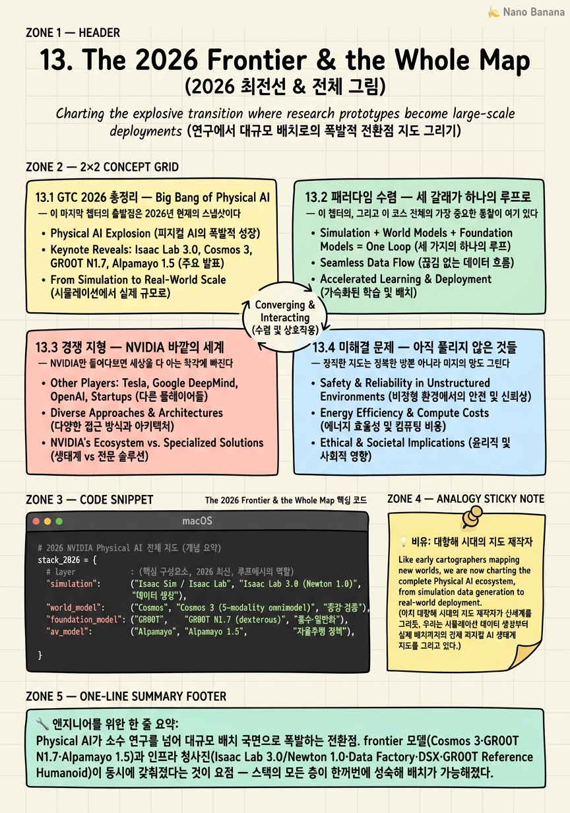

The 2026 Frontier & the Whole Map

🎯 학습 목표
- 2026년 NVIDIA Physical AI 스택의 최신 상태를 요약할 수 있다
- world model·foundation model·simulation이 수렴하는 흐름을 설명한다
- NVIDIA 스택의 강점과 lock-in 리스크를 균형있게 평가한다
- 대안 생태계(오픈소스 sim·타 world model)와의 차이를 안다
- 이 분야의 핵심 미해결 문제와 연구 방향을 제안할 수 있다
열두 챕터를 지나오며 우리는 Physical AI 스택을 조각조각 뜯어봤다 — Omniverse라는 세계, Isaac Sim·Cosmos라는 데이터 공장, Isaac Lab이라는 학습장, GR00T라는 foundation model, 자율주행 스택, 산업 digital twin, 그리고 마지막 챕터의 Jetson Thor라는 몸. 이 마지막 챕터는 그 조각들을 다시 하나의 지도로 합친다. 개별 기술을 넘어, 이 모든 것이 어디로 수렴하고 있으며 어디에 서 있는지를 조망하는 것이 목표다.
그 조망의 기준점이 GTC 2026이다. NVIDIA는 이 시점을 'Big Bang of Physical AI', 즉 Physical AI가 소수의 연구를 넘어 대규모 배치 국면으로 폭발하는 순간으로 규정했다. 이 챕터는 먼저 그 GTC 2026에서 공개된 최신 스택 — frontier 모델 세 종과 인프라 청사진들 — 을 총정리한다(13.1).
하지만 신제품 나열이 이 챕터의 목적은 아니다. 진짜 통찰은 그 위에 있다. 지금까지 따로 배운 세 갈래 — simulation(Isaac)·world model(Cosmos)·foundation model(GR00T) — 이 사실은 하나의 데이터·학습 루프로 수렴하고 있다는 것(13.2). sim이 데이터를 만들고, world model이 증강·검증하고, foundation model이 흡수하고, edge에 배치되는 하나의 순환이다. 이 패러다임 수렴이 이 코스 전체를 관통하는 뼈대다.
그다음 이 챕터는 균형을 잡는다. NVIDIA만 보면 세상을 다 아는 착각에 빠지기 쉽다. 그래서 경쟁 지형 — MuJoCo·Genesis 같은 오픈소스 sim, Sora·Genie 같은 타 world model, π0·Helix·Gemini Robotics 같은 타 foundation model — 을 짚고(13.3), 이 판의 미해결 문제들 — sim-to-real gap, 안전·규제, 데이터 품질, 진짜 일반화, 비용 — 을 정직하게 본다(13.4). 마지막으로 이 모든 것을 하나의 전략적 그림으로 종합한다(13.5) — NVIDIA는 'Physical AI의 OS + 데이터 공장 + 참조 하드웨어'를 동시에 소유하려 한다. 그 전체 지도를 완성하며 이 코스를 닫는다.
핵심 내용
13.1 GTC 2026 총정리 — Big Bang of Physical AI
이 마지막 챕터의 출발점은 2026년 현재의 스냅샷이다. NVIDIA는 GTC 2026을 'Big Bang of Physical AI'로 명명했다.
Big Bang of Physical AI = Physical AI가 소수 연구실의 실험을 넘어, frontier 모델과 참조 하드웨어·데이터 인프라가 한꺼번에 갖춰지며 대규모 배치(deployment) 국면으로 폭발하는 전환점. GTC 2026이 그 시점으로 규정된다.
이 폭발의 실체는 세 개의 frontier 모델이다.
-
Cosmos 3 — 최초의 fully open omnimodel. text·image·video·audio·action의 5개 modality를 다루며, 크기별로 Nano(16B)·Super(64B)·Edge(2B) 세 등급으로 나온다. 세계를 시각으로만 보던 world model(Chapter 6)이 소리·행동까지 아우르는 통합 모델로 확장된 것이다.
-
Isaac GR00T N1.7 — humanoid foundation model(Chapter 8)의 최신판. early access와 commercial 단계로 풀리며, dexterous(정밀 손 조작) 능력이 강화됐다.
-
Alpamayo 1.5 — 자율주행(AV, Chapter 10)용 frontier 모델.
이 세 모델을 떠받치는 인프라 청사진도 함께 갱신됐다.
-
Isaac Lab 3.0 — 물리 엔진 Newton 1.0 기반으로, dexterous RL(정밀 조작 강화학습)을 겨냥한 학습 프레임워크의 최신 버전.
-
GR00T Reference Humanoid — Chapter 12에서 본 Unitree H2 Plus + Jetson Thor 조합의 오픈 참조 하드웨어.
-
Physical AI Data Factory Blueprint — 데이터 생성을 산업화하는 청사진. 합성 데이터 파이프라인을 공장처럼 규격화한다.
-
Omniverse DSX Blueprint — AI factory(대형 데이터센터) 자체를 digital twin으로 짓고 운영하는 청사진(Chapter 11에서 예고).
여기에 대거 공개된 파트너 로봇들이 더해진다. 요점은 개별 제품이 아니다 — frontier 모델(무엇을 학습하나)·인프라 청사진(어떻게 데이터를 만들고 학습하나)·참조 하드웨어(어디에 배치하나)가 동시에 갖춰졌다는 사실 자체가 'Big Bang'의 의미다. 스택의 모든 층이 한꺼번에 성숙해 배치가 가능해진 것이다. 다음 절은 이 조각들이 사실 하나의 루프로 수렴한다는 더 깊은 그림을 본다.
13.2 패러다임 수렴 — 세 갈래가 하나의 루프로
이 챕터의, 그리고 이 코스 전체의 가장 중요한 통찰이 여기 있다. 지금까지 따로 배운 것들이 사실은 하나로 수렴하고 있다.
이 코스는 세 개의 큰 기술 갈래를 각각 다뤘다.
-
simulation(Isaac Sim·Isaac Lab) — 물리적으로 정확한 가상 환경에서 로봇을 연습시킨다.
-
world model(Cosmos) — 세계가 어떻게 흘러갈지 예측·생성하는 모델로 데이터를 만들고 증강한다.
-
foundation model(GR00T) — 방대한 데이터를 흡수해 일반화된 로봇 지능을 이룬다.
순진하게 보면 이 셋은 별개의 기술이다. 하지만 2026년의 그림에서 이들은 하나의 순환으로 맞물린다.
패러다임 수렴 = simulation·world model·foundation model이 별개 기술이 아니라, 하나의 데이터·학습 루프의 서로 다른 국면으로 통합되는 흐름. 각자가 루프의 한 단계를 맡는다.
그 루프가 어떻게 도는지 보자.
-
sim이 데이터를 만든다 — Isaac Sim이 물리적으로 정확한 시나리오를 대량 생성한다(합성 데이터).
-
world model이 증강·검증한다 — Cosmos가 그 데이터를 사실적으로 증강하고(sim의 부족한 사실감을 메우고), 생성된 정책을 다양한 상황에서 검증한다.
-
foundation model이 흡수한다 — GR00T가 이 데이터를 학습해 일반화된 정책이 된다.
-
edge에 배치된다 — 그 정책이 Jetson Thor 위로 내려가 실제 로봇을 움직인다(Chapter 12).
-
그리고 배치된 로봇의 경험이 다시 데이터가 되어 루프로 돌아온다.
이 수렴이 왜 결정적인가? 세 기술이 각자 최고여도, 서로 이질적인 도구·포맷·아키텍처로 나뉘어 있으면 데이터가 매 단계 마찰을 겪는다. 하지만 하나의 루프로 통합되면 sim의 출력이 곧 world model의 입력이 되고, 그 출력이 곧 foundation model의 먹이가 된다. 데이터가 마찰 없이 순환하는 하나의 기계가 되는 것이다.
그리고 이것이 NVIDIA 스택 전체를 관통하는 뼈대다. Isaac Lab 3.0(Newton 1.0)이 sim을, Cosmos 3가 world model을, GR00T N1.7이 foundation model을 맡고, Physical AI Data Factory Blueprint가 이 루프 자체를 산업화한다. 이 코스에서 챕터별로 따로 본 모든 조각은, 사실 이 하나의 순환하는 데이터·학습 루프의 부분들이었다.
13.3 경쟁 지형 — NVIDIA 바깥의 세계
NVIDIA만 들여다보면 세상을 다 아는 착각에 빠진다. 균형 잡힌 지도를 그리려면 바깥을 봐야 한다. 이 판에는 각 층마다 강력한 대안이 있다.
simulation 층의 대안
-
MuJoCo — DeepMind가 소유한 오픈소스 물리 시뮬레이터로, 로보틱스 연구의 오랜 표준. 흥미롭게도 DeepMind는 NVIDIA의 Newton(Isaac Lab 3.0의 물리 엔진)에 협력하고 있어, 경쟁과 협업이 뒤섞인다.
-
Genesis — 고속·differentiable(미분 가능) 시뮬레이터. 미분 가능성은 물리를 통과해 gradient를 흘려보내 학습을 가속하는 접근으로, NVIDIA와 다른 기술 노선이다.
world model 층의 대안
- OpenAI Sora, Google Genie/Veo — 강력한 영상 생성 world model들이다. 다만 이들은 주로 영상의 사실감·창작에 초점을 둔다. Cosmos는 물리 정확성과 action(행동) 조건화에 특화해 차별화한다 — 로봇 정책 학습에 쓰이려면 예쁜 영상이 아니라 물리적으로 옳고 행동에 반응하는 세계여야 하기 때문이다.
foundation model 층의 대안
- Physical Intelligence π0, Figure Helix, Google Gemini Robotics — 각각 강력한 humanoid/VLA(Vision-Language-Action) foundation model이다. GR00T의 차별점은 모델 성능 그 자체보다 오픈(open) + NVIDIA 수직 스택 통합에 있다 — sim·world model·hardware·배치가 하나로 엮인 생태계 위에 올라탄다는 점이다.
이 경쟁 지형에서 읽어야 할 것은 승패 예측이 아니라 차별화의 축이다. NVIDIA의 대안들 상당수는 특정 층(sim만, world model만, foundation model만)에서 강하다. NVIDIA의 베팅은 개별 층에서 최고가 되는 것보다, 모든 층을 하나의 통합 스택으로 묶는 데 있다. 이것이 다음 절의 미해결 문제, 그리고 마지막 절의 lock-in 논의로 이어진다.
13.4 미해결 문제 — 아직 풀리지 않은 것들
정직한 지도는 정복한 땅뿐 아니라 미지의 땅도 그린다. Physical AI는 폭발적으로 성장했지만, 근본 문제들은 여전히 열려 있다. 이 절은 그 미해결 문제들을 나열한다 — 이것들이 곧 이 분야의 연구 방향이다.
-
sim-to-real gap — 가상에서 학습한 정책이 현실로 옮겨질 때 생기는 간극. 특히 vision(시각)과 contact-rich manipulation(접촉이 많은 정밀 조작)에서 심하다. 로코모션(걷기) 같은 문제는 sim-to-real이 상당히 풀렸지만, 미묘한 접촉 힘과 실제 카메라의 노이즈·조명은 여전히 시뮬이 완벽히 재현하지 못한다. Cosmos 같은 world model 증강이 이 간극을 메우려는 시도지만 완결되지 않았다.
-
안전·규제(safety & regulation) — 사람 곁에서 움직이는 로봇과 자율주행차의 안전을 어떻게 보장하고 규제할 것인가. 대규모 배치(Big Bang) 국면일수록 이 문제가 병목이 된다.
-
데이터 품질·평가(data quality & evaluation) — 합성 데이터를 산업화(Data Factory)했지만, '좋은 데이터'가 무엇이고 정책을 어떻게 신뢰성 있게 평가할지는 여전히 열린 문제다. 시뮬 벤치마크의 점수가 실제 성능을 보장하지 않는다.
-
진짜 zero-shot 일반화 — foundation model이 정말 처음 보는 로봇·작업·환경에 무학습으로 일반화하는가, 아니면 학습 분포 안에서만 잘하는가. 진정한 일반화는 아직 증명되지 않았다.
-
비용(cost) — 이 전체 스택(데이터센터 학습·시뮬·edge 하드웨어)을 돌리는 비용이 대규모 배치의 경제성을 가른다.
이 문제들을 하나로 꿰는 관점이 있다. 이들 대부분은 13.2의 데이터·학습 루프가 아직 '완벽히 닫히지 않았음'을 가리킨다 — sim이 만든 데이터가 현실과 다르고(sim-to-real), 그 데이터의 품질을 잴 방법이 불확실하고(평가), 흡수한 정책이 정말 일반화하는지 모른다(zero-shot). 즉 미해결 문제들은 루프의 각 이음매에서 새는 곳들이다.
그래서 이 절의 메시지는 겸손이다. 2026년의 스택은 인상적이지만, Physical AI가 '풀렸다'고 말하기엔 이르다. 이 미해결 목록이야말로 앞으로의 연구가 향할 지형이며, 이 코스를 마친 사람이 실제로 기여할 수 있는 열린 질문들이다.
13.5 전체 지도 종합 — NVIDIA의 전략과 균형 잡힌 시선
이제 열세 챕터의 모든 조각을 하나의 그림으로 합칠 차례다. 개별 기술을 넘어, NVIDIA가 무엇을 하려는지를 한 문장으로 요약할 수 있다.
NVIDIA의 전략 = 'Physical AI의 OS + 데이터 공장 + 참조 하드웨어'를 동시에 소유하려는 시도. 세계를 짓는 운영 체계(Omniverse), 데이터를 산업화하는 공장(Isaac Sim·Cosmos·Data Factory), 그리고 그 지능이 내려앉는 표준 몸(Jetson Thor·GR00T Reference Humanoid)을 한 손에 쥔다.
이 세 가지가 이 코스 전체를 관통한다. Omniverse는 산업 Physical AI의 OS(Chapter 11), Isaac Sim·Cosmos·Data Factory는 합성 데이터 공장(Chapter 4~7), Jetson Thor·GR00T Reference Humanoid는 참조 하드웨어(Chapter 12)다. 그리고 이 셋을 13.2의 데이터·학습 루프가 하나로 순환시킨다. NVIDIA는 이 루프의 모든 단계를 자기 스택으로 소유하려 한다.
하지만 균형 잡힌 시선이 이 코스의 마지막 덕목이다. 이 수직 통합은 강점이자 위험이다.
lock-in 리스크 = CUDA~Omniverse~Isaac~Cosmos~Jetson으로 이어지는 수직 통합은 매끄러움이라는 강점을 주지만, 동시에 한 벤더 생태계에 대한 종속(lock-in)을 만든다. 대안 생태계(오픈소스 sim·타 world model·타 foundation model) 대비 균형 있게 평가해야 한다.
왜 이 균형이 중요한가? 12장에서 봤듯 수직 통합은 edge 제약이 cloud 설계를 규정하는 되먹임을 매끄럽게 만든다 — 진짜 기술적 강점이다. 하지만 그 매끄러움은 CUDA부터 Jetson까지 전부를 한 회사에 맡기는 대가로 온다. MuJoCo·Genesis 같은 오픈소스 sim, Sora·Genie 같은 타 world model, π0·Helix·Gemini Robotics 같은 타 foundation model이 존재한다는 사실(13.3)은, NVIDIA 스택이 유일한 길이 아님을 상기시킨다. 성숙한 엔지니어는 통합의 편의와 종속의 위험을 함께 저울에 올린다.
그리고 13.4의 미해결 문제들이 이 그림에 겸손을 더한다. NVIDIA가 OS·공장·하드웨어를 다 쥐어도, sim-to-real gap·안전·평가·진짜 일반화는 여전히 열려 있다. 스택의 완결성과 문제의 미완결성이 공존하는 것 — 이것이 2026년 Physical AI의 정직한 초상이다.
이 코스를 닫는 전체 지도는 그래서 이렇게 요약된다. 하나의 데이터·학습 루프(sim→world model→foundation model→edge)가 뼈대이고, NVIDIA는 그 루프의 모든 단계를 수직 통합된 스택으로 소유하려 하며(전략), 그것은 매끄러움과 종속을 동시에 낳고(균형), 루프의 이음매마다 미해결 문제가 남아 있다(겸손). 이 네 겹 — 뼈대·전략·균형·겸손 — 을 함께 볼 수 있다면, 당신은 이제 Physical AI의 전체 지도를 손에 쥔 것이다.
💡 비유로 이해하기
이 코스를 마친 지금의 당신은, 대항해 시대에 마침내 세계 지도를 손에 든 제작자와 같다. 처음엔 해안선 조각들 — 이 항구, 저 섬, 어느 해협 — 을 따로따로 그렸다. 그것이 챕터 1부터 12까지, Omniverse라는 항구·Cosmos라는 해류·GR00T라는 대륙·Jetson Thor라는 정박지를 하나씩 측량한 과정이다. 이 마지막 챕터는 그 조각들을 이어 붙여 하나의 세계 지도로 완성하는 순간이다.
좋은 지도의 첫 번째 통찰은 '따로 그린 해안선들이 사실 하나의 대륙이었다'는 발견이다. 시뮬레이션·world model·foundation model을 별개 땅으로 측량했지만, 이어 붙이고 보니 하나의 순환하는 데이터·학습 루프 — 한 덩어리 대륙 — 이었다. 조각을 다 그려본 자만이 이 연결을 볼 수 있고, 그것이 개별 항구를 아는 것과 세계를 아는 것의 차이다.
하지만 정직한 지도 제작자는 자기 나라의 항로만 그리지 않는다. 경쟁하는 다른 나라의 함대 — MuJoCo·Genesis라는 이웃 조선소, Sora·Genie라는 다른 해류 연구소, π0·Helix라는 경쟁 상단 — 도 지도에 표시한다. 그리고 결정적으로, 아직 아무도 건너지 못한 미지의 바다 — sim-to-real gap, 진짜 일반화, 안전이라는 폭풍우 해역 — 를 'Here be dragons(여기 용이 있다)'라고 정직하게 남겨둔다. 정복한 땅만 그린 지도는 오만하고 위험하다.
그래서 이 코스가 당신에게 쥐여주는 것은 완성된 정답이 아니라, 완성된 지도다. NVIDIA라는 거대 함대가 OS·데이터 공장·정박지를 모두 소유하려 항해 중이라는 큰 그림과, 그 항로가 유일하지 않다는 균형 감각과, 지도 가장자리에 아직 용이 사는 바다가 있다는 겸손 — 이 셋을 함께 볼 수 있을 때, 당신은 조각을 아는 사람이 아니라 전체를 아는 항해사가 된다.
💻 코드 예시
코드가 아니라 전체 지도를 요약하는 개념적 자료 구조다. 층(layer)→핵심 구성요소→2026 최신 버전→역할을 하나의 capability matrix로 묶고, 이들이 하나의 데이터·학습 루프로 수렴함을 표현한다.
# 2026 NVIDIA Physical AI 전체 지도 (개념 요약)
stack_2026 = {
# layer : (핵심 구성요소, 2026 최신, 루프에서의 역할)
"simulation": ("Isaac Sim / Isaac Lab", "Isaac Lab 3.0 (Newton 1.0)", "데이터 생성"),
"world_model": ("Cosmos", "Cosmos 3 (5-modality omnimodel)", "증강·검증"),
"foundation_model": ("GR00T", "GR00T N1.7 (dexterous)", "흡수·일반화"),
"av_model": ("Alpamayo", "Alpamayo 1.5", "자율주행 정책"),
"data_factory": ("Data Factory Blueprint","산업화된 합성 데이터 파이프라인", "루프 자체를 공장화"),
"deployment": ("Jetson / DRIVE Thor", "GR00T Reference Humanoid", "edge 배치"),
}
# 이 층들은 별개가 아니라 하나의 순환 루프로 수렴한다 (패러다임 수렴)
loop = ["simulation", "world_model", "foundation_model", "deployment"]
# sim이 데이터 -> WFM이 증강·검증 -> FM이 흡수 -> edge 배치 -> 경험이 다시 데이터로
# NVIDIA의 전략 = 이 루프의 모든 단계를 수직 통합으로 소유
strategy = "Physical AI의 OS + 데이터 공장 + 참조 하드웨어를 동시에"
lock_in = "CUDA~Omniverse~Isaac~Cosmos~Jetson: 강점이자 종속"
open_problems = ["sim-to-real gap", "안전·규제", "데이터 평가", "진짜 zero-shot", "비용"]
# 스택은 성숙했지만 루프의 이음매마다 미해결 문제가 남아 있다이 자료 구조는 이 코스 전체를 한 화면에 압축한다. stack_2026 딕셔너리는 각 층(simulation·world_model·foundation_model·av_model·data_factory·deployment)을 (핵심 구성요소, 2026 최신 버전, 루프에서의 역할) 세 값으로 묶는다 — 13.1의 GTC 2026 총정리가 그대로 표로 들어온 것이다. 여기서 가장 중요한 세 번째 값('루프에서의 역할')이 이 챕터의 핵심을 담는다. loop 리스트가 13.2의 패러다임 수렴을 표현한다 — 이 층들은 딕셔너리의 별개 항목이지만, 실제로는 sim→world_model→foundation_model→deployment로 순환하는 하나의 데이터·학습 루프의 국면들이다. 주석의 화살표가 그 순환(데이터 생성→증강·검증→흡수→배치→다시 데이터)을 그린다. strategy·lock_in은 13.5의 종합이다 — NVIDIA는 이 루프의 모든 단계를 수직 통합으로 소유하려 하고(OS+공장+하드웨어), 그것은 매끄러움(강점)과 종속(lock-in)을 동시에 낳는다. open_problems 리스트가 13.4의 겸손을 더한다 — 스택은 성숙했지만 루프의 이음매(sim-to-real·평가·일반화)마다 아직 새는 곳이 있다. 코드 한 조각에 뼈대(loop)·전략(strategy)·균형(lock_in)·겸손(open_problems)이 함께 담긴 것이 이 마무리 챕터의 요지다.
🏭 현업에서의 평가
✅ 시니어가 보는 것
- GTC 2026을 Big Bang(대규모 배치 국면)으로 규정하고 frontier 모델(Cosmos 3·GR00T N1.7·Alpamayo 1.5)과 인프라 청사진(Isaac Lab 3.0/Newton 1.0·Data Factory·DSX·GR00T Reference Humanoid)을 스택의 층으로 정리하는가
- simulation·world model·foundation model이 별개 기술이 아니라 하나의 데이터·학습 루프(sim 생성→WFM 증강·검증→FM 흡수→edge 배치→경험이 다시 데이터)로 수렴한다는 패러다임 수렴을 설명하는가
- 경쟁 지형을 층별로 구분하고(오픈소스 sim=MuJoCo·Genesis, 타 world model=Sora·Genie/Veo, 타 foundation=π0·Helix·Gemini Robotics) Cosmos·GR00T의 차별 축(물리·action 특화, 오픈+수직 통합)을 짚는가
- 미해결 문제(sim-to-real gap 특히 vision·contact-rich, 안전·규제, 데이터 품질·평가, 진짜 zero-shot 일반화, 비용)를 루프의 이음매가 아직 닫히지 않은 지점으로 연결해 연구 방향을 제안하는가
- NVIDIA 전략을 'OS+데이터 공장+참조 하드웨어 동시 소유'로 요약하고, CUDA~Omniverse~Isaac~Cosmos~Jetson 수직 통합의 강점과 lock-in 리스크를 대안 생태계 대비 균형 있게 평가하는가
⚠️ 레드 플래그
- GTC 2026을 신제품 목록으로만 나열하고, 스택의 모든 층이 동시에 성숙해 배치가 가능해졌다는 Big Bang의 의미나 층 구조를 조망하지 못하는 경우
- simulation·world model·foundation model을 끝까지 별개 기술로만 보고, 하나의 데이터·학습 루프로 수렴한다는 이 코스의 핵심 뼈대를 놓치는 경우
- NVIDIA 스택만 알고 경쟁 지형(MuJoCo·Genesis·Sora·Genie·π0·Helix·Gemini Robotics)의 존재나 Cosmos·GR00T의 차별 축을 설명하지 못하는 경우
- 스택이 인상적이라는 이유로 Physical AI가 '풀렸다'고 낙관하며 sim-to-real·안전·평가·일반화 같은 미해결 문제와 그 연구적 함의를 정직하게 짚지 못하는 경우
- 수직 통합을 강점으로만 칭송하거나 lock-in으로만 비판하는 한쪽 시각에 머물러, 매끄러움과 종속을 함께 저울에 올리는 균형 잡힌 평가를 못 하는 경우
🎤 예상 인터뷰 질문
- Q1 (종합): 2026년 NVIDIA Physical AI 스택을 층 구조로 요약하고, simulation·world model·foundation model이 왜 별개 기술이 아니라 하나의 데이터·학습 루프로 수렴하는지 그 순환을 단계별로 설명하라.
- Q2 (경쟁): NVIDIA 스택의 각 층에 어떤 대안이 있는지(sim·world model·foundation model) 예를 들고, Cosmos와 GR00T가 각각 무엇으로 차별화하는지 설명하라. 이 차별 축이 NVIDIA의 베팅과 어떻게 연결되는가?
- Q3 (평가): CUDA~Omniverse~Isaac~Cosmos~Jetson 수직 통합의 강점과 lock-in 리스크를 함께 논하라. 그리고 이 분야의 핵심 미해결 문제 하나를 골라, 왜 그것이 데이터·학습 루프의 어느 이음매가 새는 문제인지와 연구 방향을 제안하라.
✨ 핵심 요약
GTC 2026 = Big Bang of Physical AI
Physical AI가 소수 연구를 넘어 대규모 배치 국면으로 폭발하는 전환점. frontier 모델(Cosmos 3·GR00T N1.7·Alpamayo 1.5)과 인프라 청사진(Isaac Lab 3.0/Newton 1.0·Data Factory·DSX·GR00T Reference Humanoid)이 동시에 갖춰졌다는 것이 요점 — 스택의 모든 층이 한꺼번에 성숙해 배치가 가능해졌다.
Cosmos 3 — 최초의 fully open omnimodel
text·image·video·audio·action 5개 modality를 다루는 최초의 완전 오픈 omnimodel. Nano(16B)·Super(64B)·Edge(2B) 세 등급으로 나온다. 세계를 시각으로만 보던 world model이 소리·행동까지 아우르는 통합 모델로 확장됐다.
패러다임 수렴 — 하나의 데이터·학습 루프
이 코스의 핵심 뼈대. simulation·world model·foundation model은 별개 기술이 아니라 하나의 순환으로 맞물린다 — sim이 데이터를 만들고, world model이 증강·검증하고, foundation model이 흡수하고, edge에 배치되며, 그 경험이 다시 데이터로 돌아온다.
인프라도 함께 진화 — Newton·Data Factory·DSX
Isaac Lab 3.0은 Newton 1.0 물리 엔진 기반으로 dexterous RL을 겨냥한다. Physical AI Data Factory Blueprint는 합성 데이터 생성을 공장처럼 산업화하고, Omniverse DSX Blueprint는 AI factory(데이터센터)마저 digital twin으로 짓는다 — 루프 자체를 산업화하는 인프라다.
경쟁 지형 — NVIDIA가 유일한 길은 아니다
각 층에 강력한 대안이 있다: 오픈소스 sim=MuJoCo(DeepMind, Newton에 협력)·Genesis(고속 differentiable), 타 world model=Sora·Genie/Veo, 타 foundation=π0·Helix·Gemini Robotics. Cosmos는 물리·action 특화로, GR00T는 오픈+수직 통합으로 차별화한다.
미해결 문제 — 루프의 새는 이음매들
sim-to-real gap(특히 vision·contact-rich manipulation), 안전·규제, 데이터 품질·평가, 진짜 zero-shot 일반화, 비용이 여전히 열려 있다. 이들은 대부분 데이터·학습 루프가 아직 완벽히 닫히지 않았음을 가리키며, 곧 앞으로의 연구 방향이다.
NVIDIA 전략 — OS + 데이터 공장 + 참조 하드웨어
NVIDIA는 세계를 짓는 OS(Omniverse), 데이터를 산업화하는 공장(Isaac Sim·Cosmos·Data Factory), 지능이 내려앉는 표준 몸(Jetson Thor·GR00T Reference Humanoid)을 동시에 소유하려 한다 — 데이터·학습 루프의 모든 단계를 자기 스택으로 쥐는 시도다.
균형 잡힌 시선 — 수직 통합의 강점과 lock-in
CUDA~Omniverse~Isaac~Cosmos~Jetson 수직 통합은 되먹임을 매끄럽게 하는 강점이자 한 벤더 종속(lock-in)이다. 성숙한 엔지니어는 통합의 편의와 종속의 위험을 함께 저울에 올린다. 뼈대(루프)·전략(수직 통합)·균형(lock-in)·겸손(미해결)을 함께 보는 것이 전체 지도다.